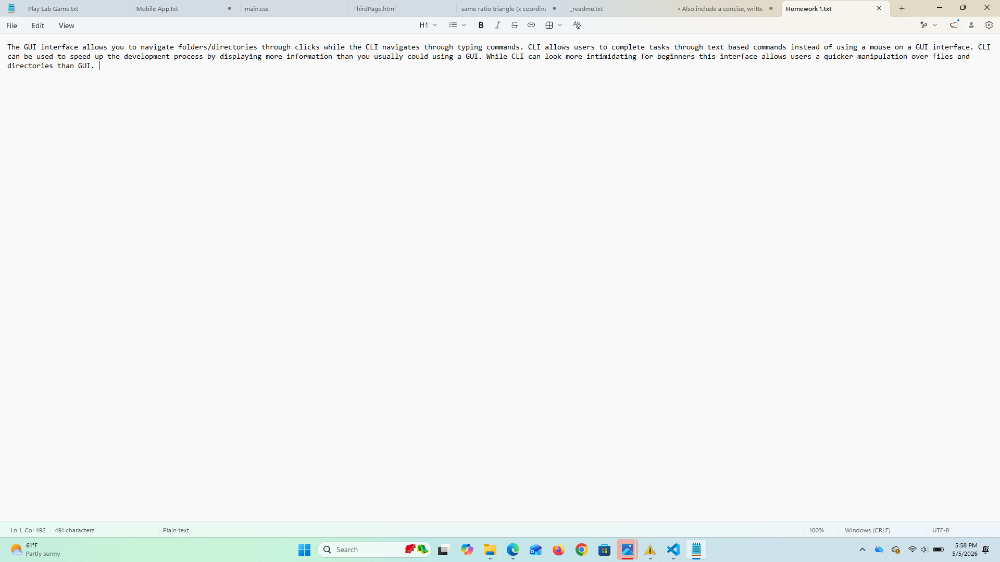
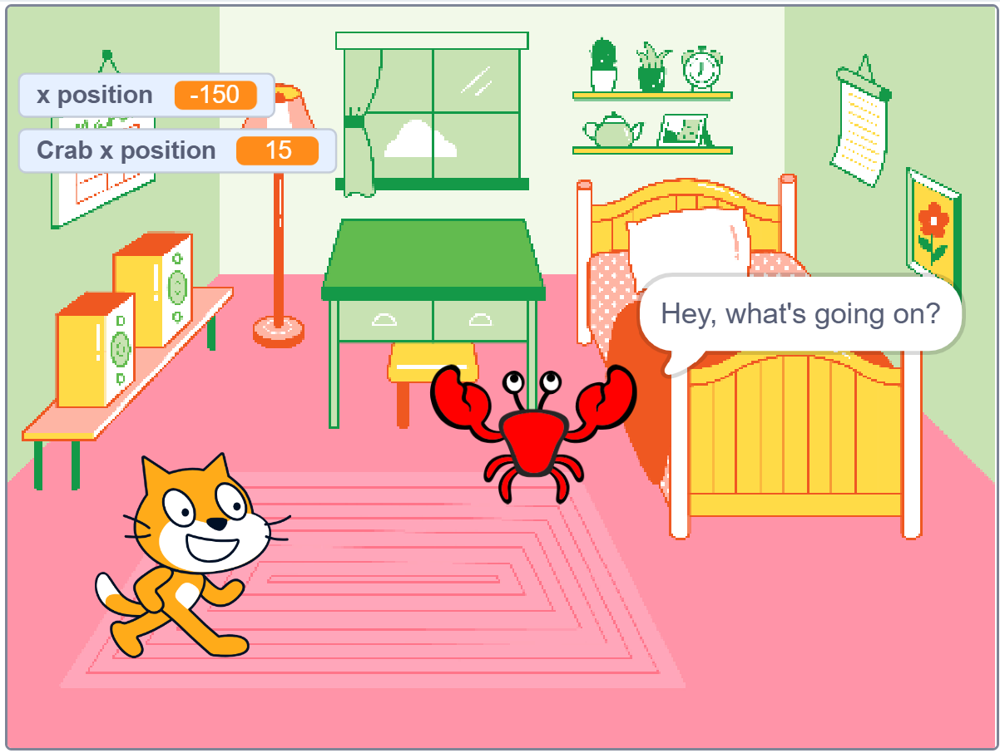
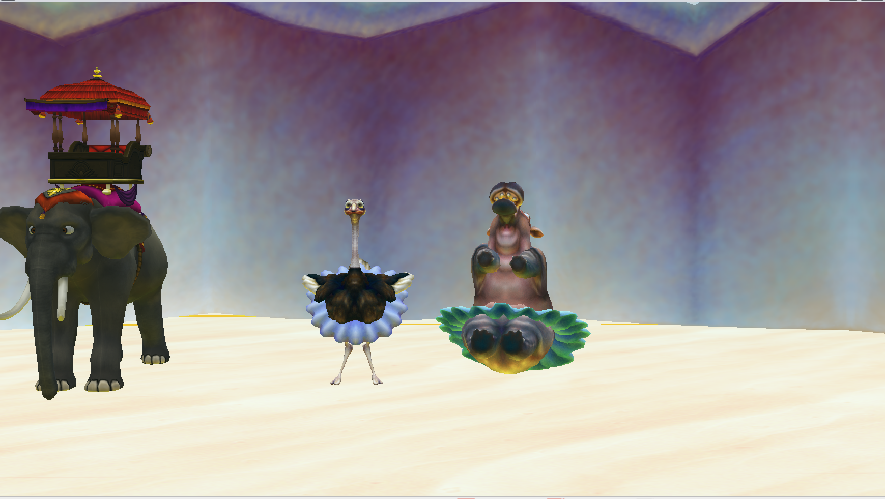

I had never coded anything before and coding had always seemed very
intimidating to me. After this class, I have realized
coding is a lot easier than I initally thought. I feel so
much more confident to try something different and new
now, even if it seems impossible at first.
~ Homework 2 ~


It was my first time experimenting with block coding. I
learned about the top down rule and how to "debug" code.
It was really satisfying to see physical results for the
first time once I got my code just right.
~ Homework 3 ~
Cat and Crab

really enjoyed this assignment. I played around a lot with
the animation creatively. In the animation Cat and Crab are having
a boring day inside their house, so they deicde to have an
adventure by going to a castle. I thoroughly enjoyed
perfecting my code so that it made exactly what I was envisioning.
~ Homework 4 ~
Dog Day Run Which Soda are You


a computer game. The object of my game was to avoid the
cat chasing you and try to touch the dragon as many times
as possible. It was exceedingly difficult for such a simple premise.
The mobile app was a personality quiz for which soda you are. I'm not
sure what compelled me to create my buzzfeedesque app
but I had fun doing it.
~ Homework 5 ~

main character, the overworked hippo at a circus, recovers from
a long day by taking a break at the watering hole. She is
met with dirty looks from her coworkers, the osterich
and the elephant, when she bumps into them. I put
a significant amount of work into this project since
the code was getting more complicated. I again
really enjoyed the process of making this, coding is a
very cool creative outlet.
~ Homework 6 - 8 ~
Gretchen's Super Cool Website


my favorite restaurants and hobbies, as well as my short
story page, and my "contact us" page. I learned about
different was to include style in the code. This assignment
made me realize that creating a website is way easier than I
expected and made me curious about making my own website
in the future.
~ Homework 9 ~
Portrait

but I think it represents my feelings toward myself more.
~ Homework 10 ~
Moving Portrait

portrait to dismember itself and move across the screen. There
was a lot of trial and error to get the objects to move
how I wanted but I eventually got it to work.
~ Homework 11 ~
Circle Game

blue ball into the exit while dodging the enemy circles.
This project was a bit more challenging as there was
a bit of math beginning to be implemented into the code.
~ Homework 12 ~
Circle Game Updated

by implementing functions. The functions thoroughly confused
me at first but after breaking it down, a lot, it was much easier.
~ Homework 13 ~
Circle Game New Obstacles

more obstacles and used arrays to create them. The
arrays helped a lot with scaling up the objects and anything
else that needed to be duplicated.